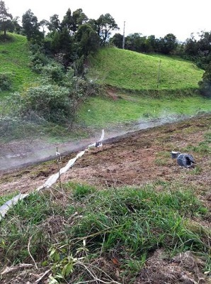

Aplicaciones de la geofísica en la geotermia
Geotermia
Actualmente la geotermia es una de las energias renovables con excelente proyeccion de futuro. El aprovechamiento de la energía geotérmica esta asociado a un sistema geotermal natural. En el cual se diferencian tres elementos principales:
- una fuente de calor (intrusión magmática)
- un sistema hidrotermal (circuito de fluidos y gases calentados)
- un reservorio (área rocosa que contiene los fluidos)
Para el estudio de estas areas se requiere de la aplicación de técnicas de prospección geológica, geoquímica y geofísica.
OCSA aplica sus más de 30 años de experiencia en prospección geofísica; aplicada a la geotecnia, hidrogeología, ingeniería de túneles, estudio de presas, minería; en proyectos de geotermia. Aportando soluciones y calidad de trabajo
Con trabajos realizados en diferentes áreas del mundo
Técnicas geofísicas en la geotermia
La utilización de la geofísica en la exploración geotérmica permite un mejor entendimiento de las estructuras geologicas potenciales de albergar el recurso geotérmico. Tanto a nivel regional para seleccionar areas de valor, como a nivel de detalle para definir localizaciones especificas de sondeos.
Para la decisión de utilizar una determinada técnica geofísica es necesario tener en consideración elementos como la configuración geológica, el tipo de recurso y la profundidad del yacimiento. Así como el coste de ejecución.
Las técnicas geofísicas que nosotros hemos aplicado al campo de la geotermia obteniendo unos excelentes resultados son:
Proyectos en geotermia
Con casi 700 proyectos ejecutados desde nuestros inicios, ha sido en los últimos años cuando hemos observado un gran incremento en las actividades relacionadas con la Energía Geotérmica. La Prospección Geofísica ha supuesto una herramienta básica en la investigación de este sector, principalmente en el estudio de la estructura geológica del terreno, identificación de fallas y fracturas en profundidad, todo ello enfocado a la captación de aguas termales. También en filtraciones y pérdida de caudal, etc..
Algunos de los proyectos más importantes en los que hemos participado en el campo de la geotermia son los siguientes:
- Proyecto de Captación de Aguas Termales en las Termas de Monte Real (Portugal)
- Prospección Geofísica en el Área de Caldeiras da Ribeira Grande en Isla de San Miguel- Azores (Portugal)
- Proyecto de Captación de Aguas Termales en Termas de Vizela (Portugal)
- Proyecto de Captación de Aguas Termales en Termas de Chaves (Portugal)
- Proyecto de Captación de Aguas Termales en Parque de Aguas Termales de Vidago (Portugal)
- Proyecto de Captación de Aguas Termales en las Termas de Monfortinho (Portugal)
- Proyecto de Captación de Aguas Termales en el Área Termal de Vimeiro- Lisboa (Portugal)
Otros proyectos destacables para temas de Captación de Aguas Minerales fueron:
- Proyecto de Captación de Aguas Minerales en la Región de Naamacha (Mozambique)
- Proyecto de Captación de Aguas Minerales en la Región de Saua-Saua (Mozambique)
- Proyecto de Captación de Aguas para riego en Grajera - Segovia (España)
